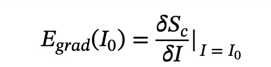
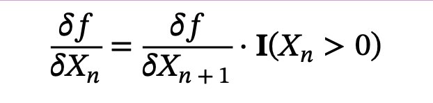
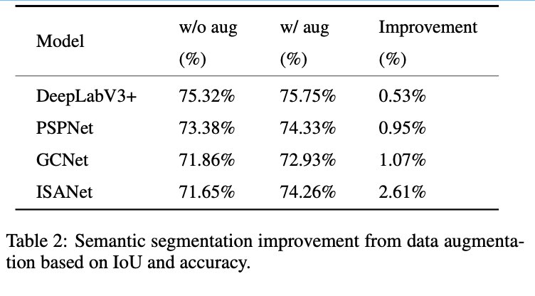
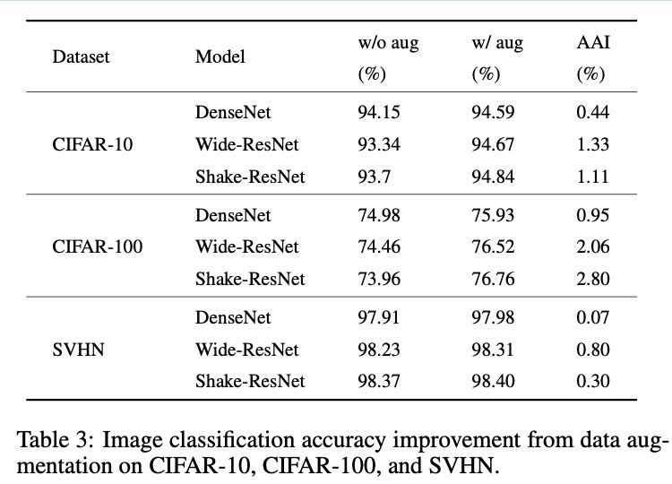
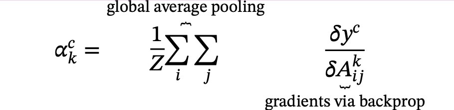
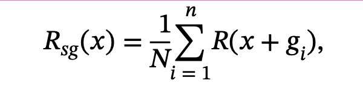
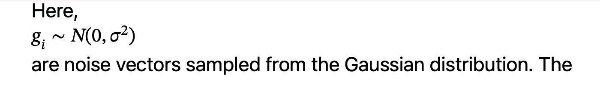
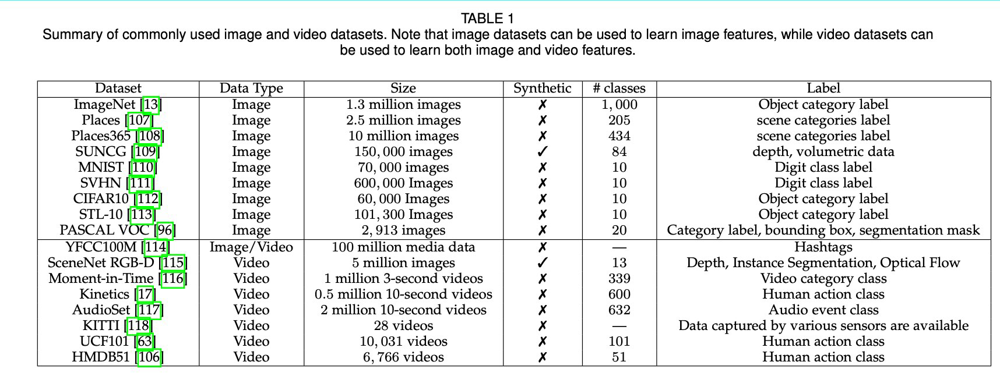

Pixelattribution
Pixel Attribution
- Pixel attribution is a special case of feature attribution, but for images
- Feature attribution explains individual predictions by attributing each input feature according to how much it changed the prediction (negatively or positively)
- The features can be input pixels, tabular data or words
Occlusion or Perturbation-based
- Methods like SHAP and LIME manipulate parts of the image to generateexplanations (modelagnostic).
Gradient-based
- compute the gradient of the prediction (or classification score) with respect to theinput feature
- The gradient-based methods (of which there are many) mostly differ in how thegradient is computed.
- explanation has the same size as the input image (or at least can be meaningfullyprojected onto it) and they assign each pixel a value that can be interpreted as therelevance of the pixel to the prediction or classification of that image.
Gradient-only Methods
- whether a change in a pixel would change the prediction
- Examples are Vanilla Gradient and Grad-CAM
- If I were to increase the color values of the pixel, the predicted class probabilitywould go up (for positive gradient) or down (for negative gradient
- The larger the absolute value of the gradient, the stronger the effect of a change ofthis pixel.
Path-attribution Methods
- compare the current image to a reference image, which can be an artificial “zero”image such as a completely grey image
- The difference in actual and baseline prediction is divided among the pixels
- The baseline image can also be multiple images: a distribution of images
- model-specific gradient-based methods such as Deep Taylor and IntegratedGradients
- model-agnostic methods such as LIME and SHAP.
- Some path-attribution methods are “complete”, meaning that the sum of therelevance scores for all input features is the difference between the prediction of theimage and the prediction of a reference image
- Examples are SHAP and Integrated Gradients.
- The difference between classification scores of the actual image and the baselineimage are attributed to the pixels
- The choice of the reference image (distribution) has a big effect on the explanation
Vanilla Gradient
-
We calculate the gradient of the loss function for the class we are interested in withrespect to the input pixels
-
This gives us a map of the size of the input features with negative to positive values.
-
The recipe for this approach is:
-
- Perform a forward pass of the image of interest.
-
- Compute the gradient of the class score of interest with respect to the input pixels:
-

-
Here we set all other classes to zero.
-
- Visualize the gradients. You can either show the absolute values or highlight negative and positive contributions separately.
-
More formally, we have an image I and the convolutional neural 𝑆𝑐(𝐼) network gives ita score
-
for class c
-
The score is a highly non-linear function of our image.
-
The idea behind using the gradient is that we can approximate that score byapplying a first-order Taylor expansion
-

-
some ambiguity how to perform a backward pass of the gradients
-
since non-linear units such as ReLU (Rectifying Linear Unit) “remove” the sign
-
So when we do a backpass, we do not know whether to assign a positive or negativeactivation
-

-
This means that when the activation of a neuron is zero, we do not know which valueto backpropagate
-
In the case of Vanilla Gradient, the ambiguity is resolved as follows: 𝛿𝑓= 𝛿𝑓
-

-
𝐈 e r e , activation at the lower layer was negative, and one where it is positive orzero
-
Vanilla Gradient takes the gradient we have backpropagated so far up to layer n+1,and then simply sets the gradients to zero where the activation at the layer below isnegative
Problems with Vanilla Gradient
- saturation problem
- When ReLU is used, and when the activation goes below zero, then the activation iscapped at zero and does not change any more
DeconvNet
- almost identical to Vanilla Gradient
- The goal of DeconvNet is to reverse a neural network and the paper proposesoperations that are reversals of the filtering, pooling and activation layers
- but apart from the reversal of the ReLU layer, DeconvNet is equivalent to the Vanilla Gradient approach
- Vanilla Gradient can be seen as a generalization of DeconvNet
- DeconvNet makes a different choice for backpropagating the gradient- 12:24 through ReLU:

- When backpassing from layer n to layer n-1, DeconvNet “remembers” which of theactivations in layer n were set to zero in the forward pass and sets them to zero in layer n-1
- 𝑋ctivations with a negative value in layer x are set to zero in layer n-1.
Grad-CAM
- Grad-CAM provides visual explanations for CNN decisions
- Unlike other methods, the gradient is not backpropagated all the way back to theimage, but (usually) to the last convolutional layer to produce a coarse localizationmap that highlights important regions of the image.
- Gradient-weighted Class Activation Map
- based on the gradient of the neural networks
- assigns each neuron a relevance score for the decision of interest
- This decision of interest can be the class prediction (which we find in the outputlayer), but can theoretically be any other layer in the neural network
- GradCAM can be used with different CNNs: with fully-connected layers, forstructured output such as captioning and in multi-task outputs, and forreinforcement learning.
- s a reminder, the first convolutional layer of a CNN takes as input the images andoutputs feature maps that encode learned features
- higher-level convolutional layers do the same, but take as input the feature maps ofthe previous convolutional layers
- There are k feature maps in the last 𝐴 ,𝐴 ,…,𝐴
- Grad-CAM has to decide how important each of the k feature map was to our class cthat we are interested in
- We have to weight each pixel of each feature map with the gradient before weaverage over the feature maps
- This gives us a heatmap which highlights regions that positively or negatively affectthe class of interest
- This heatmap is send through the ReLU function, which is a fancy way of saying thatwe set all negative values to zero
- Grad-CAM removes all negative values by using a ReLU function, with the argumentthat we are only interested in the parts that contribute to the selected class c and not to other classes
- The word pixel might be misleading here as the feature map is smaller than theimage (because of the pooling units) but is mapped back to the original image
- We then scale the GradCAM map to the interval [0,1] for visualization purposes and overlay it over the original image.
- 
- Forward-propagate the input image through the convolutional neural network.
- Obtain the raw score for the class of interest, meaning the activation of the neuron before the softmax layer.
- Set all other class activations to zero.
- 
- Back-propagate the gradient of the class of interest to the last 𝛿𝑦𝑐 𝛿𝐴𝑘 convolutional layer before the fully connected layers.
- Weight each feature map “pixel” by the gradient for the class. Indices i and j refer to the width and height dimensions.
- 
- This means that the gradients are globally pooled
- Calculate an average of the feature maps, weighted per pixel by the gradient.
- Apply ReLU to the averaged feature map.
- Scale values to the interval between 0 and 1. Upscale the image and overlay it over the original image.
- Additional step for Guided Grad-CAM: Multiply the heatmap with guided backpropagation.
Guided Grad-CAM
- From the description of Grad-CAM you can guess that the localization is verycoarse, since the last convolutional feature maps have a much coarser resolution compared to the input image
- In contrast, other attribution techniques backpropagate all the way to the inputpixels
- They are therefore much more detailed and can show you individual edges or spotsthat contributed most to a prediction
- You compute for an image both the GradCAM explanation and the explanationfrom another attribution method, such as Vanilla Gradient
- The Grad-CAM output is then upsampled with bilinear interpolation, then both mapsare multiplied element-wise
- Grad-CAM works like a lense that focuses on specific parts of the pixel-wiseattribution map.
# SmoothGrad
- make gradient-based explanations less noisy by adding noise and averaging overthese artificially noisy gradient
- SmoothGrad is not a standalone explanation method, but an extension to anygradientbased explanation method.
-
- Generate multiple versions of the image of interest byadding noise to it. 2.Create pixel attribution maps for all images.
-
- Average the pixel attribution maps.
- The theory is that the derivative fluctuates greatly at small scales
- Neural networks have no incentive during training to keep the gradients smooth,their goal is to classify images correctly
- Averaging over multiple maps “smooths out” these fluctuations
- 
- 
- 
- And that is the big issue with all of these methods
- We do not have a ground truth for the explanations
- We can only, in a first step, reject explanations that obviously make no sense (andeven in this step we do not have strong confidence
Disadvantages
- it is difficult to know whether an explanation is correct, and a huge part of theevaluation is only qualitative
- Pixel attribution methods can be very fragile
- Ghorbani et al. (2019)86 showed that introducing small (adversarial) perturbationsto an image, which still lead to the same prediction, can lead to very different pixelsbeing highlighted as explanations.
- Kindermans et al. (2019) 87 also showed that these pixel attribution methods can behighly unreliable
- They added a constant shift to the input data, meaning they added the same pixelchanges to all images
- They compared two networks, the original network and the “shifted” network wherethe bias of the first layer is changed to adapt for the constant pixel shift
- Both networks produce the same predictions.
- Further, the gradient is the same for both
- But the explanations changed, which is an undesirable property. They looked at DeepLift, Vanilla Gradient and Integrated Gradients.